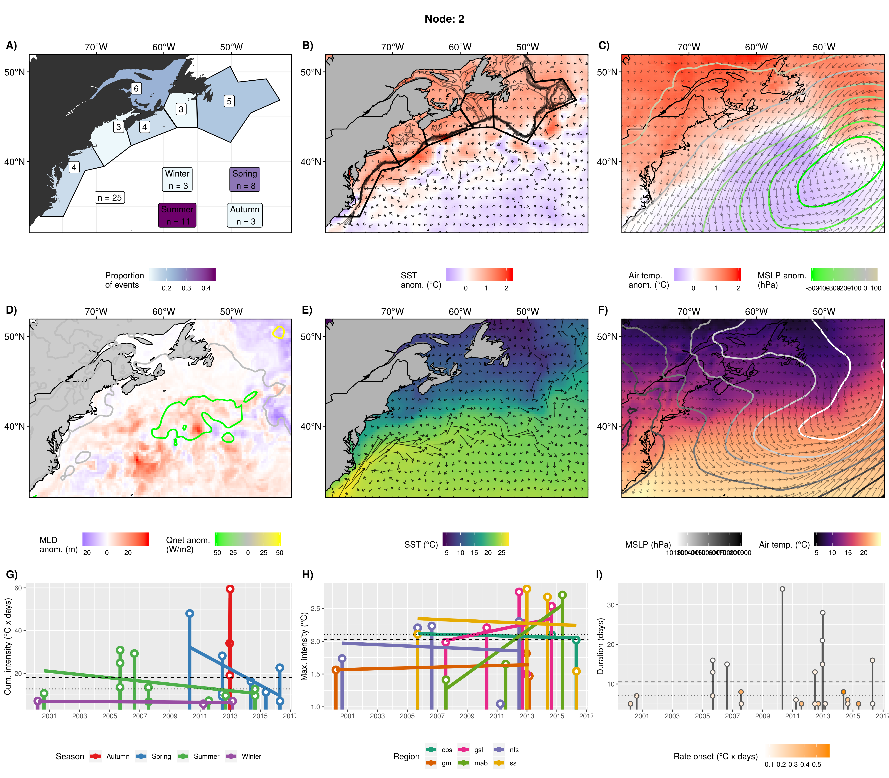

Node summaries
Robert Schlegel
2019-07-09
Last updated: 2020-02-20
Checks: 7 0
Knit directory: MHWNWA/
This reproducible R Markdown analysis was created with workflowr (version 1.6.0). The Checks tab describes the reproducibility checks that were applied when the results were created. The Past versions tab lists the development history.
Great! Since the R Markdown file has been committed to the Git repository, you know the exact version of the code that produced these results.
Great job! The global environment was empty. Objects defined in the global environment can affect the analysis in your R Markdown file in unknown ways. For reproduciblity it’s best to always run the code in an empty environment.
The command set.seed(20190513) was run prior to running the code in the R Markdown file. Setting a seed ensures that any results that rely on randomness, e.g. subsampling or permutations, are reproducible.
Great job! Recording the operating system, R version, and package versions is critical for reproducibility.
Nice! There were no cached chunks for this analysis, so you can be confident that you successfully produced the results during this run.
Great job! Using relative paths to the files within your workflowr project makes it easier to run your code on other machines.
Great! You are using Git for version control. Tracking code development and connecting the code version to the results is critical for reproducibility. The version displayed above was the version of the Git repository at the time these results were generated.
Note that you need to be careful to ensure that all relevant files for the analysis have been committed to Git prior to generating the results (you can use wflow_publish or wflow_git_commit). workflowr only checks the R Markdown file, but you know if there are other scripts or data files that it depends on. Below is the status of the Git repository when the results were generated:
Ignored files:
Ignored: .Rhistory
Ignored: .Rproj.user/
Ignored: LaTeX/SOM_node_summary.docx
Ignored: LaTeX/SOM_node_summary.pdf
Ignored: data/NAPA/NAPA_clim_U.Rda
Ignored: data/NAPA/NAPA_clim_V.Rda
Ignored: data/NAPA/NAPA_clim_W.Rda
Ignored: data/NAPA/NAPA_clim_emp_ice.Rda
Ignored: data/NAPA/NAPA_clim_emp_oce.Rda
Ignored: data/NAPA/NAPA_clim_fmmflx.Rda
Ignored: data/NAPA/NAPA_clim_mldkz5.Rda
Ignored: data/NAPA/NAPA_clim_mldr10_1.Rda
Ignored: data/NAPA/NAPA_clim_qemp_oce.Rda
Ignored: data/NAPA/NAPA_clim_qla_oce.Rda
Ignored: data/NAPA/NAPA_clim_qns.Rda
Ignored: data/NAPA/NAPA_clim_qsb_oce.Rda
Ignored: data/NAPA/NAPA_clim_qt.Rda
Ignored: data/NAPA/NAPA_clim_runoffs.Rda
Ignored: data/NAPA/NAPA_clim_ssh.Rda
Ignored: data/NAPA/NAPA_clim_sss.Rda
Ignored: data/NAPA/NAPA_clim_sst.Rda
Ignored: data/NAPA/NAPA_clim_taum.Rda
Ignored: data/NAPA/NAPA_clim_vars.Rda
Ignored: data/NAPA/NAPA_clim_vecs.Rda
Ignored: data/NAPA/synoptic_vec_states.Rda
Ignored: data/SOM/packet.Rda
Ignored: data/SOM/synoptic_states.Rda
Ignored: data/SOM/synoptic_states_other.Rda
Ignored: data/anom/ALL_anom.Rda
Ignored: data/anom/ALL_other.Rda
Ignored: data/anom/ERA5_mslp_anom.Rda
Ignored: data/anom/ERA5_qnet_anom.Rda
Ignored: data/anom/ERA5_t2m_anom.Rda
Ignored: data/anom/ERA5_u_anom.Rda
Ignored: data/anom/ERA5_v_anom.Rda
Ignored: data/anom/GLORYS_mld_anom.Rda
Ignored: data/anom/GLORYS_u_anom.Rda
Ignored: data/anom/GLORYS_v_anom.Rda
Ignored: data/anom/OISST_sst_anom.Rda
Ignored: data/base/ERA5_lhf.Rda
Ignored: data/base/ERA5_lwr.Rda
Ignored: data/base/ERA5_mslp.Rda
Ignored: data/base/ERA5_qnet.Rda
Ignored: data/base/ERA5_shf.Rda
Ignored: data/base/ERA5_swr.Rda
Ignored: data/base/ERA5_t2m.Rda
Ignored: data/base/ERA5_u.Rda
Ignored: data/base/ERA5_v.Rda
Ignored: data/base/GLORYS_mld.Rda
Ignored: data/base/GLORYS_u.Rda
Ignored: data/base/GLORYS_v.Rda
Ignored: data/base/OAFlux.Rda
Ignored: data/base/OISST_sst.Rda
Ignored: data/clim/ALL_clim.Rda
Ignored: data/clim/ERA5_mslp_clim.Rda
Ignored: data/clim/ERA5_qnet_clim.Rda
Ignored: data/clim/ERA5_t2m_clim.Rda
Ignored: data/clim/ERA5_u_clim.Rda
Ignored: data/clim/ERA5_v_clim.Rda
Ignored: data/clim/GLORYS_mld_clim.Rda
Ignored: data/clim/GLORYS_u_clim.Rda
Ignored: data/clim/GLORYS_v_clim.Rda
Ignored: data/clim/OISST_sst_clim.Rda
Ignored: data/comparison/node_mean_all_anom.Rda
Ignored: data/comparison/packet_all.Rda
Ignored: data/comparison/packet_all_anom.Rda
Ignored: data/comparison/packet_nolab.Rda
Ignored: data/comparison/packet_nolab14.Rda
Ignored: data/comparison/packet_nolabgsl.Rda
Ignored: data/comparison/packet_nolabmod.Rda
Ignored: data/comparison/som_all.Rda
Ignored: data/comparison/som_all_anom.Rda
Ignored: data/comparison/som_nolab.Rda
Ignored: data/comparison/som_nolab14.Rda
Ignored: data/comparison/som_nolab_16.Rda
Ignored: data/comparison/som_nolab_9.Rda
Ignored: data/comparison/som_nolabgsl.Rda
Ignored: data/comparison/som_nolabmod.Rda
Ignored: data/eddy_trajectory_2.0exp_19930101_20180118.nc
Ignored: talk/IMBeR_2019.html
Ignored: talk/MHWNWA.html
Unstaged changes:
Modified: code/functions.R
Modified: output/SOM/air_u_v_mslp_anom.pdf
Modified: output/SOM/air_u_v_mslp_real.pdf
Modified: output/SOM/cum_int_season.pdf
Modified: output/SOM/cum_int_season.png
Modified: output/SOM/duration_rate_onset.pdf
Modified: output/SOM/max_int_region.pdf
Modified: output/SOM/max_int_region.png
Modified: output/SOM/mld_anom_sd.pdf
Modified: output/SOM/msl_anom_sd.pdf
Modified: output/SOM/msl_sd.pdf
Modified: output/SOM/node_10_panels.pdf
Modified: output/SOM/node_10_panels.png
Modified: output/SOM/node_11_panels.pdf
Modified: output/SOM/node_11_panels.png
Modified: output/SOM/node_12_panels.pdf
Modified: output/SOM/node_12_panels.png
Modified: output/SOM/node_1_panels.pdf
Modified: output/SOM/node_1_panels.png
Modified: output/SOM/node_2_panels.pdf
Modified: output/SOM/node_2_panels.png
Modified: output/SOM/node_3_panels.pdf
Modified: output/SOM/node_3_panels.png
Modified: output/SOM/node_4_panels.pdf
Modified: output/SOM/node_4_panels.png
Modified: output/SOM/node_5_panels.pdf
Modified: output/SOM/node_5_panels.png
Modified: output/SOM/node_6_panels.pdf
Modified: output/SOM/node_6_panels.png
Modified: output/SOM/node_7_panels.pdf
Modified: output/SOM/node_7_panels.png
Modified: output/SOM/node_8_panels.pdf
Modified: output/SOM/node_8_panels.png
Modified: output/SOM/node_9_panels.pdf
Modified: output/SOM/node_9_panels.png
Modified: output/SOM/qnet_anom_sd.pdf
Modified: output/SOM/qnet_mld_anom.pdf
Modified: output/SOM/region_season.pdf
Modified: output/SOM/sst_anom_sd.pdf
Modified: output/SOM/sst_sd.pdf
Modified: output/SOM/sst_u_v_anom.pdf
Modified: output/SOM/sst_u_v_real.pdf
Modified: output/SOM/t2m_anom_sd.pdf
Modified: output/SOM/t2m_sd.pdf
Modified: output/SOM/u10_anom_sd.pdf
Modified: output/SOM/u10_sd.pdf
Modified: output/SOM/u_anom_sd.pdf
Modified: output/SOM/u_sd.pdf
Modified: output/SOM/v10_anom_sd.pdf
Modified: output/SOM/v10_sd.pdf
Modified: output/SOM/v_anom_sd.pdf
Modified: output/SOM/v_sd.pdf
Note that any generated files, e.g. HTML, png, CSS, etc., are not included in this status report because it is ok for generated content to have uncommitted changes.
These are the previous versions of the R Markdown and HTML files. If you’ve configured a remote Git repository (see ?wflow_git_remote), click on the hyperlinks in the table below to view them.
| File | Version | Author | Date | Message |
|---|---|---|---|---|
| Rmd | d613bf9 | robwschlegel | 2020-02-20 | Re-publish entire site. |
| Rmd | fdb5f2b | robwschlegel | 2020-02-20 | Edits |
| Rmd | e9d1b43 | Robert William Schlegel | 2020-02-13 | Received feedback on poster, transitioning figure creation to a dedicated script to accomodate the specific changes necessary. |
| Rmd | f897fde | Robert William Schlegel | 2020-02-13 | All figures rendered and spacing on poster set. |
| Rmd | 617a8cb | Robert William Schlegel | 2020-02-13 | Decent draft of poster. Still need to re-render figure 2 but need tikoraluk to do it. |
| Rmd | 26f73b4 | robwschlegel | 2019-09-04 | Updates to summary talk |
| html | ae97ec9 | robwschlegel | 2019-08-28 | Build site. |
| Rmd | 2a0ec98 | robwschlegel | 2019-08-28 | Added more figures to node summary vignette. |
| html | a7fbd91 | robwschlegel | 2019-08-28 | Build site. |
| Rmd | 454b53b | robwschlegel | 2019-08-28 | Complete overhaul to piepline and full third round of results. |
| Rmd | 600a1ae | robwschlegel | 2019-08-27 | Re-edited SOM node summary text for the figures that show all of the nodes together |
| Rmd | d980be6 | robwschlegel | 2019-08-26 | Working towards the node summary figure pipeline update |
| Rmd | 27b124b | robwschlegel | 2019-08-23 | Working on code to smoothly introduce the other data needed for creating summary figures but that aren’t used in the SOM calculation |
| html | 826c73d | robwschlegel | 2019-08-15 | Build site. |
| Rmd | a226aa6 | robwschlegel | 2019-08-15 | Re-publish entire site. |
| html | 143b1a6 | robwschlegel | 2019-08-15 | Build site. |
| Rmd | 78f4977 | robwschlegel | 2019-08-15 | Re-publish entire site. |
| Rmd | eac68d5 | robwschlegel | 2019-08-15 | Finished the first pass over all of the node results. |
| Rmd | 07fe2a2 | robwschlegel | 2019-08-14 | Nearly through the node summaries for the three SOM experiments |
| Rmd | a61b420 | robwschlegel | 2019-08-13 | Working on SOM write-up |
| html | 20ae166 | robwschlegel | 2019-08-11 | Build site. |
| Rmd | d46e344 | robwschlegel | 2019-08-11 | Re-publish entire site. |
| html | 19bea26 | robwschlegel | 2019-08-11 | Build site. |
| Rmd | b6e2cd9 | robwschlegel | 2019-08-11 | Re-publish entire site. |
| html | 2652a3a | robwschlegel | 2019-08-11 | Build site. |
| Rmd | 75c138c | robwschlegel | 2019-08-11 | Re-publish entire site. |
| Rmd | adc762b | robwschlegel | 2019-08-08 | Re-worked the GLORYS data and propogated update through to SOM analysis figures for all experiments |
| html | f0d2efb | robwschlegel | 2019-08-07 | Build site. |
| Rmd | 9d81722 | robwschlegel | 2019-08-07 | Re-publish entire site. |
| Rmd | ed626bf | robwschlegel | 2019-08-07 | Ran a bunch of figures and had a meeting with Eric. More changes coming to GLORYS data tomorrow before settling on one of the experimental SOMs |
| html | d4ba012 | robwschlegel | 2019-07-09 | Build site. |
| Rmd | c8a5a1a | robwschlegel | 2019-07-09 | Fixing figure display in vignette. |
| Rmd | 3a740c2 | robwschlegel | 2019-07-09 | Creating assets folder for displaying figures created in other vignettes in new vignettes etc. |
| html | 3a740c2 | robwschlegel | 2019-07-09 | Creating assets folder for displaying figures created in other vignettes in new vignettes etc. |
| html | 81e961d | robwschlegel | 2019-07-09 | Build site. |
| Rmd | 497eeb2 | robwschlegel | 2019-07-09 | Re-publish entire site. |
| Rmd | 95a168d | robwschlegel | 2019-07-09 | Frame of node summary vignette worked out |
Introduction
This vignette shows the summary figures for the SOM results. The code used to create these summary figures may be found in code/functions.R. Figures showing the synoptic states of variables for all of the nodes at once are shown first, followed by multi-panel summary plots for each individual node, which are listed below by their number. Use the table of contents on the left of the screen to move quickly between variables and specific nodes of interest as desired.
In an earlier version of this work the Labrador Shelf region was included in the list of study regions. This was omitted because the Labrador Sea processes seemed to compete with the Gulf Stream processes within the SOM calculation. With the Labrador Shelf region removed, and the northern extent of the study area reduced, the SOM was able to make much better sense of the data. We also considered removing the Gulf of ST. Lawrence region, but upon further analysis it was left in as it allows for more atmospheric processes to be considered by the SOM. We also experimented with different SOM node counts but settled on a 12 node (4x3 grid) as this produced important differences in the middle two columns that a 3x3 grid or smaller covered up. The last experimental step taken was the reduction of the MHW synoptic states being fed to the SOM. We filtered events by category in one experiment and duration in another. The duration filter (103 MHWs) produced results similar to the 3x3 grid, whereas the filtering by category (~36 MHWs) removed so may events that we needed to run the SOM on a 2x2 grid, which removed quite a bit of important information. All of these experiments still produced significantly different nodes (ANOSIM test), with the 2x2 grid having the largest p-value at p= 0.046. It was decided not to use a 4x4 grid as this did not produce useful additional details/patterns.
Unresolved in this vignette is the criticism that the methodology used for the creation of the mean synoptic states fed to the SOM is weak to long events coming through as “grey”, meaning they average out to a rather unremarkable state, even though they are likely the most important of all. One proposed fix for this would be to create synoptic states using only the peak date of the event, rather than a mean over the range of the event. This has not been done as it would likely bias the results towards events with very dramatic peaks. A final point is that this methodology should also be useful for looking backwards and forwards through time to see what the synoptic states looked like leading up to and just after the event.
Visualise SOM results
The following code chunk creates PDFs and PNGs for each of the variables for each of the nodes. These images may be seen at output/SOM/.
Figure summary key
The summaries for the figures below have a lot of acronyms in them but they are consistently used and I will provide a list of what they are here. Whenever one sees an acronym in lower case letters it is referring to one of the regions of the study area as seen in the following figure.

The regions of the coast were devided up by their temperature and salinity regimes based on work by Richaud et al. (2016).
The region abbreviations will always be in lower case and are:
- cbs = Cabot Straight
- gm = Gulf of Maine
- gls = Gulf of St. Lawrence
- ls = Labrador Shelf NO LONGER USED
- mab = Mid-Atlantic Bight
- nfs = Newfoundland Shelf
- ss = Scotian Shelf
The upper case abbreviations are used for larger features and are:
- SST = Sea surface temperature
- SOM = Self-organising map(s)
- GS = Gulf Stream
- AO = Atlantic Ocean
- LS = Labrador Sea
- LC = Labrador Current
- NS = Nova Scotia
- CN = Canada
- US = United States
It is also worth noting that the scales used to show the variables in the individual node summary figures are not the same across all of the nodes. This was an intentional decision as it allows for more detail to emerge within each node summary. The overall comparisons of nodes are to be done on the figures that show only 2 – 3 variables for all of the nodes at once.
The written summary of each individual node below is broken into three pieces:
- the MHW metrics, region + season + years of occurrence;
- the patterns observed in the physical variables;
- a sentence stating what appears to be the main driver/pattern.
SOM results
There are a total of 289 MHWs considered when putting this 12 node (4x3) SOM together. The largest concentration of MHWs is into the middle two SOM nodes (6 + 7), where there are twice as many events as some of the side and corner nodes. The top left corner, node 1, also has a large amount of events placed within it and the diagonally opposite node (12) has a decent number. Overall I would not have said that any of the nodes have a questionable allotment of events, but further analysis shows that node 8 (middle right) is mostly populated by MHWs from one large event.
Node summary tables
The tables below contain a concise summary of the nodes following Table 4 in Oliver et al. (2018). The following sub-sections provide more in-depth explanations.
| Node | Count | Years | Season | Region |
|---|---|---|---|---|
| 1 | 25 | 1999, 2004 - 2018 | Summer focus; little Autumn | nfs focus; 2 ss; 1 gm + mab |
| 2 | 25 | 2000 - 2016 | Summer + Spring; little Autumn + Winter | Even split; fewer gm + cbs |
| 3 | 19 | 2006 - 2017 | Summer focus + Winter | Even split; focus cbs; 2 gm; 1 nfs |
| 4 | 18 | 1994, 2014 - 2018 | Spring focus; little else | mab focus; 0 gsl + nfs |
| 5 | 17 | 1999, 2012 - 2018 | Autumn focus; little else; no Spring | cbs + nfs focus; little else; 0 mab |
| 6 | 29 | 1994, 2006 - 2018 | SUMMER; no Winter | mab focus; 2 nfs |
| 7 | 32 | 2009 - 2018 | SUMMER; little else | gm focus; 1 nfs |
| 8 | 15 | 2002, 2015 - 2018 | Winter + Autumn; no Summer | mab focus; 1 cbs; 0 nfs |
| 9 | 18 | 2000, 2012 - 2017 | Autumn; some Winter + Spring; no Summer | nfs focus; 1 cbs + gm; 0 mab |
| 10 | 35 | 1999 - 2017 | Autumn focus, little Spring | nfs + cbs focus |
| 11 | 25 | 1994 - 2015 | Spring + Summer; no Autumn | gsl focus; little cbs |
| 12 | 31 | 1999 - 2017 | Autumn + Winter; little else | mab focus; 1 nfs |
| Node | Cause |
|---|---|
| 1 | Summer focused, but an any time of year meridional cyclonic storm that is pulling air from the northeast over LS that is warm there, but cooler relative to the southern reaches of the study area. |
| 2 | Zonal cyclonic storm pulling warm air from land onto coastal waters in Spring/Summer |
| 3 | Meridional pressure gradient allowing winds to pull warm land air out onto the coastal waters |
| 4 | Fast moving coastal-wards GS magnified by strong southerly Spring winds |
| 5 | Warm air being pulled up over the ocean by a cyclone that first dumps the air onto nfs and less so from there. |
| 6 | ‘Dog days of Summer’ pattern where a negative pressure anomaly sitting off the coast sustains northward movement of air along the entire coastline. |
| 7 | A summer meridional anticyclonic storm pattern of warm air being pulled north along the coast and sent over the regions. |
| 8 | The GS is pumping hard up into the study area and bringing a lot of hot air with it that is forcing its way down into the waters of the GS and coastal regions south of the cbs. |
| 9 | Zonal cyclonic system bringing warm air over the ocean up to the nfs and pulling cold air down over the mab and gm, mixing up the AO as it goes. |
| 10 | Autumn storm coming from the east to bring warm air to the nfs but usually turns away/stops before reaching the coast of the US. |
| 11 | Spring/Summer storm that is pushing warm air onto the coast coming from the southeast. |
| 12 | Zonal anticyclone that is sitting over the AO in Autumn – Winter that is pushing a bunch of warm air over and into the coastal regions, excluding the nfs as the colder LS appears to may be blocking this. |
| node | mean_int_cum | median_int_cum | mean_int_max | median_int_max | mean_dur | median_dur |
|---|---|---|---|---|---|---|
| 1 | 33.28 | 18.42 | 2.34 | 2.25 | 18.88 | 11.0 |
| 2 | 18.18 | 12.73 | 2.03 | 2.10 | 10.52 | 7.0 |
| 3 | 17.38 | 13.60 | 2.11 | 1.84 | 9.68 | 7.0 |
| 4 | 24.30 | 17.06 | 2.04 | 2.04 | 14.06 | 11.0 |
| 5 | 32.74 | 31.18 | 2.19 | 2.22 | 18.18 | 19.0 |
| 6 | 42.05 | 29.48 | 2.49 | 2.31 | 19.83 | 16.0 |
| 7 | 44.95 | 27.32 | 2.51 | 2.43 | 22.44 | 16.0 |
| 8 | 32.90 | 17.52 | 2.01 | 1.74 | 18.40 | 14.0 |
| 9 | 10.57 | 8.94 | 1.75 | 1.76 | 6.67 | 5.5 |
| 10 | 23.75 | 21.05 | 1.95 | 2.04 | 13.71 | 13.0 |
| 11 | 29.64 | 21.81 | 2.40 | 2.45 | 13.72 | 9.0 |
| 12 | 13.17 | 12.38 | 1.80 | 1.78 | 8.39 | 7.0 |
Schematic summary
The following figure shows an overall visual summary of all of the variables for all of the nodes at once. Along the edges are arrows indicating the overall trends in change of variables as one moves across the nodes.

| Version | Author | Date |
|---|---|---|
| 823a5fd | robwschlegel | 2019-08-28 |
Region + season
The nodes in the right-hand column have mostly events centred around the mab and almost none in the nfs. The distribution becomes more even as we move to the centre with the left-hand nodes having mostly nfs and gsl events. There is no apparent pattern as one moves from the top to the bottom. Keep in mind that the region + season of occurrence are not fed to the SOM so any patterns that come out here are very important.
For patterns in seasons, we most quickly see that the MHWs occurring in the middle two nodes are primarily summer events. The seasons are determined by the month during which the peak of the event occurred, with Winter = JFM etc. The top middle two nodes are most often Summer events, with node 2 showing many Spring events, and node 3 showing many Winter events. The bottom left node (10) has an even distribution centred around Autumn, and the bottom right node (11) is primarily Spring – Summer. The bottom right two nodes (8 + 12) are primarily Autumn – Winter events, with node 4 (top right) being centred around Spring. The bottom left two nodes (5 + 9) are mostly Autumn, with node 5 having no Spring events and node 9 having no Summer events. Node 1 (top left) is largely Summer events with many in Winter and Spring as well.

| Version | Author | Date |
|---|---|---|
| 600a1ae | robwschlegel | 2019-08-27 |
SST + U + V (anom)
For SST we see moving from right to left that the LS anomaly tends to go from cool to warm and the inverse is true of the GS anomaly in the bottom of the mab. As we move from the top down the AO tends to become warmer. The ss is warm in all of the nodes, and it is around this region that the heat focus of each node pivots.
The only anomalous current pattern I see is that nodes 1 + 10 + 11 + 12 show less strength/vorticity in the GS than the other nodes, but this isn’t very remarkable. The strength of the GS is apparent in node 8, slightly less so in node 4, and the vorticity in the eddy field is very apparent in node 5 + 9. All-in-all though I don’t think this variable says much.

| Version | Author | Date |
|---|---|---|
| 600a1ae | robwschlegel | 2019-08-27 |
Air temp + U + V + MSLP (anom)
For air temperature anomalies we see that the air above the LS gets warmer as we move left and down. The air over the US becomes warmer as we move to the right. Most of the air in the middle bottom four nodes (6, 7, 10, 11) is warm. The air over the AO becomes warmer as we move down the nodes. The bottom row shows zonal temperature gradients (east – west) whereas the top row (and node 8) is meridional (north – south). The middle row is less clear.
One consistent pattern across all of the wind anomalies is that the top row nodes show strong anomalous movement down from the northeast corner while the bottom right corner nodes have strong northward wind anomalies in their northeast corners. The top row is mostly air coming down from the North whereas the bottom row is mostly air coming up from the South.
In the right-hand column of nodes we see generally high-pressure anticyclonic wind anomalies around a thermal dipole with the northward moving air being anomalously warm; the warmer (colder) the anomaly the faster north (south) the anomalous wind movement is. We tend to see the opposite in the left-hand column. In the second right-most column (nodes 3 + 7 + 11) we also see anticyclonic wind anomalies around thermal dipoles. The central position of the anticyclone is different in each node, and the thermal anomalies are less than the right-hand column. The left-hand two columns have cyclonic wind movement around thermal dipoles with the stronger patterns in the far left column. Node 10 is a bit different in that it appears to have anticyclonic wind movement, but a cold dipole that looks more like the cyclonic movement nodes. The center two nodes show almost no anomalous wind patterns or MSLP, with node 6 having a slight negative MSLP anomaly and node 7 being slightly positive.
Node 9 shows the Nor’easter storm signature. The left-hand column is basically low pressure storms. The right-hand column is basically high pressure blocking. The middle middle nodes are “dog days” of summer. The top and bottom middle nodes are similar to outsides but show transitions between them. Whether it is a storm or not depends on the season of occurrence.

| Version | Author | Date |
|---|---|---|
| 600a1ae | robwschlegel | 2019-08-27 |
Net downward heatflux + MLD (anom)
The gradients of net downward heatflux (qnet) change nicely across the nodes and generally speaking we see more positive (negative) qnet areas with anomalously shallow (deep) water. There is little happening in the centre two nodes. There is high positive qnet over the LS + AO in the bottom left node (9) with negative heatflux over the GS. This positive qnet gradient slowly moves over the AO as we move from the left to the right along the bottom row of nodes. There is a negative qnet gradient over the GS in the top left node (1) that slowly moves up and over to the LS as we move across the top row of nodes. This negative qnet patch is replaced by a positive one.
The MLD in the AO in the top nodes is generally deeper, and shoals as we move to the bottom row (with the exception of node 4). The MLD in the LS is deeper in the right-hand column and shoals as we move left. The MLD for the GS is deeper in the left-hand column and shoals as we move to the right.

| Version | Author | Date |
|---|---|---|
| 600a1ae | robwschlegel | 2019-08-27 |
SD of variables per pixel per node
The following figures show the standard deviation (SD) per pixel per node based on the variance between all of the synoptic states that were clustered into each node. Higher SD values show a poorer match between synoptic states within each node. These areas of high SD highlight areas where the representative synoptic state in the results does not accurately portray what most synoptic states clustered into each node are showing. Lower areas of SD show where the node is better representing what most synoptic states are showing. The units in each colour scale are the same as the variable in the figure.
SST anom
U anom
V anom
Air temp anom
U10 anom

V10 anom
Qnet anom
MSLP anom
MLD anom

Heatmap of summary statistics
The figure below shows a heatmap of the median and mean of: max intensity, cumulative intensity, and duration of the MHWs clustered into each node. Note that the overall largest MHWs are found in the middle two nodes (6 + 7), but that the median duration/cumulative intensity of the MHWs in node 5 are the largest.

Cumulative intensity
The centre two nodes clearly have the largest individual MHWs w.r.t. cumulative intensity. They also have the largest mean intensity and almost the largest median intensities, but node 5 comes out just ahead because it has fewer small events. The top middle two nodes, and bottom outside two nodes have MHWs with much smaller cumulative intensities. The median (mean) intensities of the bottom middle two events are greater (less) than the top outside two nodes.

| Version | Author | Date |
|---|---|---|
| 600a1ae | robwschlegel | 2019-08-27 |
Max intensity
We see roughly the same pattern here as the cumulative intensity pattern. Node 11 however has the largest median intensity, and nearly the largest mean intensity as well.

| Version | Author | Date |
|---|---|---|
| 600a1ae | robwschlegel | 2019-08-27 |
Duration
Again the same pattern. Except now node 11 has a low median duration and node 5 has the highest median duration. The MHWs in the middle row are by far the longest, with the median durations similar between the top and bottom rows, but with the mean durations longer in the top. There is no clear pattern moving from left to right. Rather it is more centred round the middle nodes and moves out from there.

| Version | Author | Date |
|---|---|---|
| 600a1ae | robwschlegel | 2019-08-27 |
Node 1
The seasons of occurrence in this node are centred around Summer, with only three MHWs in Autumn. Almost all of the events took place in the nfs, cbs, or gsl. The most intense events in this node occurred in Autumn/Winter of 2010/11. There are events from 1999 – 2018 with more events in the later half. There is a big mix of many very small and a couple of large events for both cumulative and max intensities. There were six pulses of this event that caused MHWs in multiple regions simultaneously. When this event occurs it tends to trigger multiple events at once.
The LS and northern coastal waters are warm while the AO and GS are cold. Looking closely one may see that the GS is slightly anomalously slow. The atmosphere is dominated by a cyclonic meridional dipole offshore of the mab/gm with the northern (southern) half being anomalously warm (cold). The AO is up to 20 metres deeper with a weak negative qnet over it and the GS. The LS is shallow with no anomalous qnet.
The MHWs in this node were caused by an any time of year cyclonic storm that is pulling air from the northeast over LS that is warm there, but cooler relative to the southern reaches of the study area.

| Version | Author | Date |
|---|---|---|
| 600a1ae | robwschlegel | 2019-08-27 |
Node 2
An even distribution of MHWs across all regions. Mostly summer then spring. The occurrence of events spans 2000 – 2016. The cumulative and max intensity of these events are very low. The occurrence of this event in autumn happened only once (2012). When these events occur in winter they have a cumulative intensity of ~8. lol.
A cold AO with a warm yet very turbulent GS with many warm/cold core eddies. It is surprising how well the detail of the eddies comes through given that these are many different events over many years. The rest of the coastal waters and LS are all warm with relatively little movement. Air over AO is cold but warm everywhere else. Strong cyclonic meridional wind anomalies over the area south of where the AO and LS meet. No wind movement over land where the air anomaly is warmest. Slight positive qnet over LS, where MLD is slightly shallow. Negative qnet over deeper AO/GS where it is approaching the LS. The many eddies show up here in a more unusual MLD pattern.
These events appear to be caused by a very large zonal cyclonic storm pulling warm air from land onto coastal waters in Spring/Summer. This anomalous wind movement is probably what is causing so many eddies.

| Version | Author | Date |
|---|---|---|
| 600a1ae | robwschlegel | 2019-08-27 |
Node 3
These MHWs are split between winter and summer. There are about half as many MHWs in this node than normal at a count of 14. Most events occurred in the gsl and cbs. The occurrence of events spans only 2006 – 2017, with more events occurring in the first half. The cumulative + max intensities and durations are very low.
Cold eastern AO with warm water everywhere else. There appears to be an anticyclonic cell pulling warm air up the coast and cold air over the AO. But there is also a cyclonic cell in the northeast corner that appears to be doing the same. There is little warm air movement inland. There is no positive qnet in this node, and weak negative qnet over some of the deeper MLD areas. Slightly shallower water in the coastal regions. Looking at the real values we see a bizarrely parallel (meridional) MSLP gradient and mostly westerly winds.
These MHWs are caused by a meridional pressure gradient allowing winds to pull warm land air out onto the coastal waters.

| Version | Author | Date |
|---|---|---|
| 600a1ae | robwschlegel | 2019-08-27 |
Node 4
These MHWs occurred almost entirely in the mab with a bit trailing out into the gm, ss and cbs. Events range from 1994 – 2018 but mostly take place from 2014 onward. Half of the events occurred in Spring, with the other half split between the other three seasons. Low cumulative intensities, but mid-high max intensities. The MHWs that occurred in the mab tend to have higher max intensities.
Very clearly a strong + warm GS pushing up closer along the shelf during a cold LS. Warm air anomalies over US and GS with strong northward wind anomalies. Cold air over CN with southward air anomalies. These two air flows appear either unconnected or perhaps two separate cyclonic and anticyclonic cells. Positive heatflux into shallower GS with a strong negative flux into deeper point where the LS and GS meet.
This is a good example of a strong GS causing MHWs in the southern regions of the study.

| Version | Author | Date |
|---|---|---|
| 600a1ae | robwschlegel | 2019-08-27 |
Node 5
These are Autumn events with a bit spilling out into Summer and Winter with no Spring events. MHWs centred around cbs with 0 in mab. Most events occurred between 2012 – 2017. Two small events occurred in 1999. Low to high cumulative intensities but mid to high max intensities. The intensity of events in the Autumn are greater than the Winter. This could be due to phenology shifts of this storm pattern. Most MHWs occurred during two Autumn pulses of this pattern.
Cool coastal GS, warm SST anomaly everywhere else. Warm air anomaly over all of the study area except coastal GS, hottest over the grand banks. Zonal cyclonic cell sitting over area where GS pulls away from coast. Slightly deeper MLD of waters along coast, possibly due to GS. Some small negative qnet into mab/gm waters and some positive qnet over the GS as it travels out of the study area and LS.
These northern focused MHWs are driven by warm air being pulled up over the ocean by a cyclone that first dumps the air onto nfs and less so from there.
| Version | Author | Date |
|---|---|---|
| 600a1ae | robwschlegel | 2019-08-27 |
Node 6
A node with many MHWs clustered into it and focused on the mab with only 2 in the nfs. Almost all of the events occurred in summer, with 4 in Autumn, 3 in Spring, and 0 in Winter. The cumulative intensities are medium high with a couple of very large MHWs. The max intensity on these events is very high on average, with several medium sized ones. Range from 1999 – 2018. The MHWs in this node are the second largest. Almost half of the MHWs in this node occurred during one pulse that lasted from Spring – Summer 2012.
Warm SST and air anomalies throughout entire study area. Note that the air temp anomalies are actually low, at less than 2.0, compared to most of the other nodes. Very little current anomaly and some faster northward air over US coast while some southward wind anomaly over AO. Wind in the north of the study area has slight northward anomaly. Almost nothing happening w.r.t. MLD and heatflux (see scale bar). It is worth noting that there is practically no qnet anomaly and almost no MLD anomaly.
This appears to be a classic “dog days of Summer” pattern where a negative pressure anomaly sitting off the coast sustains northward movement of air along the entire coastline.

| Version | Author | Date |
|---|---|---|
| 600a1ae | robwschlegel | 2019-08-27 |
Node 7
Almost three quarters of events occurred in summer. Highest centre of occurrence in the gm at 11 MHWs, slowly decreasing out from there. Even though this is a mostly summer node, the summer events are small at a mean cumulative intensity of ~30. The MHWs in other seasons tend to be larger, with 3 of the 5 winter MHWs that occurred here being massive. The max intensity of events here are medium to very high, with one winter event in the mab having a max intensity over 4C! Summer events occurred like this from 2009 to 2018, but things really started to pick up in 2012 when this storm pattern started to occur in the other parts of the year. The MHWs in this node are the largest in the study. Almost all of the events occurred in one of the four summer pulses of this event, or the one large winter pulse.
A warm AO with a stronger GS and warm coastal waters but cold LS. Warm air over US - CN border with large meridional anticyclone cell over eastern AO. Mostly shallow MLD over study area. Small positive qnet over GS, no negative qnet. The air and SST anomalies are higher than most nodes.
A summer meridional anticyclonic storm pattern of warm air being pulled north along the coast and sent over the regions.

| Version | Author | Date |
|---|---|---|
| 600a1ae | robwschlegel | 2019-08-27 |
Node 8
This node has only 15 MHWs clustered into it. Almost half of the MHWs occurred in the mab, with fewer in the other coastal regions further away. The main range of MHWs occurred from 2015 - 2017, with two small events in 2002/3 and one even smaller event in 2012. This node primarily consists of one (maybe two) event that occurred over Autumn – Winter of 2015/16. The order of the max intensities caused in the multiple regions during each pulse remained the same as seen in panel I. Most of the other smaller events from years outside of the large pulse occurred in the mab as seen in node I.
Obviously strong coast-ward GS with a strong eddy field. High SST anomaly with a super cold core anomaly to the east. Crazy high (~5C) air anomaly over US and GS with concurrent northward winds. Cold southward flowing air from over the cold LS waters. It doesn’t really look like this is one weather system, rather two. Crazy high positive heatflux (~200W/m2) over GS near the coast and very shallow AO, with equally massive negative heatflux over very deep LS. The heatflux anomalies in this node are roughly 4 times larger than most other nodes.
The GS is pumping hard up into the study area and bringing a lot of hot air with it that is forcing its way down into the waters of the GS and coastal regions south of the cbs. I’m not sure what’s going on in the atmosphere but it doesn’t really look like an anticyclone.
| Version | Author | Date |
|---|---|---|
| 600a1ae | robwschlegel | 2019-08-27 |
Node 9
Most MHWs occurred here in Autumn, then Winter and Spring in either the nfs, cbs, or ss. MHW occurrences range from 2012 – 2017 with a three small individual MHWs in 2000, 2005, and 2006. These MHWs are tiny with a median duration of 5.5 days. There is one Winter event that lasted 19 days.
Cold GS along coastline, with warm waters everywhere else. GS is moving a bit more quickly with some good eddy action. Cold southward air over CN, US, and GS. Very warm northward air over AO + LS. Negative qnet over deep GS with large positive qnet into very shallow AO + LS. Hectic zonal cyclone dipole pulling warm air north on the eastern side.
This is very clearly a zonal cyclonic system bringing warm air over the ocean up to the nfs and pulling cold air down over the mab and gm, mixing up the AO as it goes. Even though the atmosphere looks dramatic, this isn’t creating large MHWs as this storm system must pass by rapidly.

| Version | Author | Date |
|---|---|---|
| 600a1ae | robwschlegel | 2019-08-27 |
Node 10
Events centred in the nfs + cbs and decreasing as one moves further away. Focus towards autumn events and away from Spring. The MHWs occurred from 1999 – 2017 but are mostly in two large clumps of events over the years of 1999 and 2012. The MHWs are small.
We see a mostly warm SST anomaly everywhere but much higher to the south of the nfs. Very mild cold air over US + CN with very high warm anomaly over nfs. There appears to be a zonal anticyclone centred over the AO but affecting the LS, too. Very little positive MLD to be found, with a very negative MLD anomaly for the AO and LS, but normal over the nfs. Positive qnet into he GS + AO + LS.
This looks like some sort of huge Autumn storm coming from the east to bring warm air to the nfs but usually turns away/stops before reaching the coast of the US.
| Version | Author | Date |
|---|---|---|
| 600a1ae | robwschlegel | 2019-08-27 |
Node 11
Relatively even spread of events focused on the gsl. Almost exclusively Spring/Summer events. The range is from 1994 – 2015 and well spread out. There was a large pulse of this event from Spring – Summer in 1999. Overall small events. The winter MHWs are the smallest, with the summer and then spring events being the largest.
Mix of slightly warm and cold eddies in GS. Warmer waters to the north of the GS but less so in the LS. A very large zonal anticyclone centred over the AO that is pulling warm air up onto the coast where it reaches nearly 4C over NS! Slightly deeper southern AO and GS eddies with most of the rest of the study area being slightly shallow. No negative qnet and positive qnet over AO.
This is a Spring/Summer storm that is pushing warm air onto the coast coming from the southeast.
| Version | Author | Date |
|---|---|---|
| 600a1ae | robwschlegel | 2019-08-27 |
Node 12
MHWs focused on mab with only 1 in the nfs. Almost all events occurred in autumn and winter. Range is 1999 – 2017. These events are tiny, but some have medium max intensities. Also note that the first half of the time series these events are only occurring in the Autumn/Spring, and mostly Autumn/Winter in the second half.
A warm gulf stream and coastal waters with spotty LS. Very warm air over US + CN with northward wind anomaly over the GS + AO. There appears to be an anticyclone happening over all water bodies, centred in the southeast corner. A generally shallower MLD for the GS and AO, with a deep tongue in the LS. No negative qnet with high positive qnet into GS + AO.
This appears to be a zonal anticyclone that is sitting over the AO in Autumn – Winter that is pushing a bunch of warm air over and into the coastal regions, excluding the nfs as the colder LS appears to may be blocking this.

| Version | Author | Date |
|---|---|---|
| 600a1ae | robwschlegel | 2019-08-27 |
References
Oliver, E. C., Lago, V., Hobday, A. J., Holbrook, N. J., Ling, S. D., and Mundy, C. N. (2018). Marine heatwaves off eastern tasmania: Trends, interannual variability, and predictability. Progress in oceanography 161, 116–130.
Richaud, B., Kwon, Y.-O., Joyce, T. M., Fratantoni, P. S., and Lentz, S. J. (2016). Surface and bottom temperature and salinity climatology along the continental shelf off the canadian and us east coasts. Continental Shelf Research 124, 165–181.
R version 3.6.2 (2019-12-12)
Platform: x86_64-pc-linux-gnu (64-bit)
Running under: Ubuntu 16.04.6 LTS
Matrix products: default
BLAS: /usr/lib/openblas-base/libblas.so.3
LAPACK: /usr/lib/libopenblasp-r0.2.18.so
locale:
[1] LC_CTYPE=en_CA.UTF-8 LC_NUMERIC=C
[3] LC_TIME=en_CA.UTF-8 LC_COLLATE=en_CA.UTF-8
[5] LC_MONETARY=en_CA.UTF-8 LC_MESSAGES=en_CA.UTF-8
[7] LC_PAPER=en_CA.UTF-8 LC_NAME=C
[9] LC_ADDRESS=C LC_TELEPHONE=C
[11] LC_MEASUREMENT=en_CA.UTF-8 LC_IDENTIFICATION=C
attached base packages:
[1] stats graphics grDevices utils datasets methods base
other attached packages:
[1] ggforce_0.3.1.9000 yasomi_0.3 proxy_0.4-23
[4] e1071_1.7-3 tidync_0.2.3 ncdf4_1.17
[7] heatwaveR_0.4.2.9001 data.table_1.12.8 lubridate_1.7.4
[10] forcats_0.4.0 stringr_1.4.0 dplyr_0.8.4
[13] purrr_0.3.3 readr_1.3.1 tidyr_1.0.2
[16] tibble_2.1.3 ggplot2_3.2.1 tidyverse_1.3.0
loaded via a namespace (and not attached):
[1] httr_1.4.1 foreach_1.4.4 jsonlite_1.6.1 viridisLite_0.3.0
[5] modelr_0.1.5 assertthat_0.2.1 highr_0.8 cellranger_1.1.0
[9] yaml_2.2.1 pillar_1.4.3 backports_1.1.5 lattice_0.20-35
[13] glue_1.3.1 digest_0.6.23 promises_1.1.0 polyclip_1.10-0
[17] rvest_0.3.5 colorspace_1.4-1 htmltools_0.4.0 httpuv_1.5.2
[21] pkgconfig_2.0.3 broom_0.5.3 haven_2.2.0 scales_1.1.0
[25] tweenr_1.0.1 whisker_0.4 later_1.0.0 git2r_0.26.1
[29] farver_2.0.3 generics_0.0.2 ellipsis_0.3.0 withr_2.1.2
[33] lazyeval_0.2.2 cli_2.0.1 magrittr_1.5 crayon_1.3.4
[37] readxl_1.3.1 evaluate_0.14 fs_1.3.1 fansi_0.4.1
[41] doParallel_1.0.15 nlme_3.1-137 MASS_7.3-50 xml2_1.2.2
[45] class_7.3-14 tools_3.6.2 hms_0.5.3 lifecycle_0.1.0
[49] plotly_4.9.1 munsell_0.5.0 reprex_0.3.0 compiler_3.6.2
[53] RNetCDF_2.1-1 rlang_0.4.4 grid_3.6.2 iterators_1.0.10
[57] rstudioapi_0.10 htmlwidgets_1.5.1 rmarkdown_2.0 codetools_0.2-15
[61] gtable_0.3.0 DBI_1.0.0 R6_2.4.1 ncmeta_0.2.0
[65] knitr_1.27 workflowr_1.6.0 rprojroot_1.3-2 stringi_1.4.5
[69] parallel_3.6.2 Rcpp_1.0.3 vctrs_0.2.2 dbplyr_1.4.2
[73] tidyselect_1.0.0 xfun_0.12